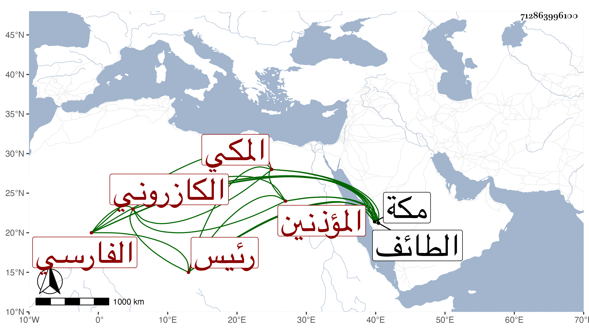

0902Sakhawi.DawLamic.ITO20230111-ara1.EIS1600.712863996100
Biography ID: 712863996100
316
أبو الخير ويسمى محمد بن محمد بن أبي الخير محمد بن علي بن عبد الله ابن علي بن محمد بن عبد السلام بن أبي المعالي بن أبي الخير بن ذاكر بن أحمد ابن الحسن الفارسي الكازروني الأصل المكي رئيس المؤذنين بالمسجد الحرام ويعرف بابن أبي الخير . ولد في ثاني عشرى شعبان سنة تسع وعشرين وثمانمائة بمكة ونشأ بها وكان يذكر أنه قرأ الربع الأول من التنبيه وولي رياسة المؤذنين بعد والده شريكا لأخيه عبد السلام في سنة سبع وخمسين ثم لما مات أخوه شاركه ولده أبو عبد الله وكان لهما أيضا التسبيح بمنارة باب السلام ونصف أذان باب العمرة ومنع غير مرة من الأذان ثم يعاد وليس له ما يذكر به نعم يرجى له من الله الغفران بسبب قيامه في الليل وذكره لله تعالى في الأسحار وهو ممن سمع مني بمكة في سنة ست وثمانين ورافقنا إلى الطائف قبل ذلك . مات بعد تعلله نحو جمعة في يوم الأحد رابع عشر ربيع الأول سنة تسع وثمانين ودفن بعد عصر يومه عند سلفه من المعلاة تجاوز الله عنه ورحمه .
